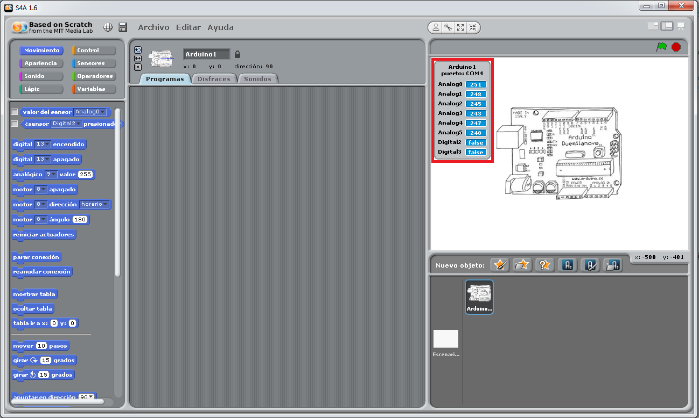

BÚSQUEDA DE INFORMACIÓN
1- Tipos de semáforos
- El semáforo peatonal.
- Semáforos reservados a determinados vehículos.
- Los semáforos inteligentes.
- Semáforos con cámara.
- Semáforo con amarillo intermitente.
- Semáforo para tranvía.
- Semáforos de carril.
- Semáforo ámbar como reductor de velocidad.
CÓMO FUNCIONAN LOS SEMÁFOROS
Un semáforo funciona de forma que se encienden primero el rojo, luego el verde, y por último el amarillo. Después volvería a empezar por el rojo. Para programar nuestro semáforo no necesitamos ningún bloque que no hayamos usado antes. La única novedad será elegir en el bloque “digital encendido” y “digital apagado” la salida digital que queramos utilizar.
Comenzaremos el programa con los mismos bloques de control que comenzamos la práctica anterior, ya que queremos que el semáforo funcione continuamente mientras esté pulsada la bandera verde.
Lo primero que queremos hacer es que se encienda el LED rojo durante 3 segundos y después se apague. Como es el que hemos conectado a la salida digital 13, seleccionaremos esa salida en los bloques de “Movimiento” de encender y apagar. En el bloque de “Control” de “esperar” le ponemos 3 segundos.
No queremos que pase tiempo entre que se apague el LED rojo y se encienda el amarillo. Por eso no necesitamos poner otro bloque de “esperar” después de apagar. Hacemos los mismo para el LED verde (pin digital 10) y para el amarillo (pin digital 11), con la excepción de que el amarillo solo queremos que este encendido 1 segundo.
Si damos a la bandera verde para ejecutar el programa, veremos cómo funciona nuestro propio semáforo en la placa Arduino. En la sesión anterior vimos cómo conectar correctamente un LED. Ahora vamos a complicar un poco el circuito conectando tres diodos LED que se encenderán y apagarán para construir nuestro propio semáforo.
Hemos conectado cada uno de los diodos LED a diferentes salidas digitales para poder gobernarlos de forma independiente. Sólo necesitamos una resistencia porque está en serie con los tres diodos. La corriente que circule por cualquiera de ellos lo hará también por la resistencia, de forma que protegerá a los tres de quemarse. Cerramos el circuito conectando la resistencia a GND. En general, se considera buena costumbre (la recomendamos), montar los circuitos que veamos a partir del esquema electrónico del mismo, más que a partir del diagrama de conexiones de la protoboard. La razón es que con el esquema, la comprensión del circuito es completa y se evita la tentación de copiar la práctica sin necesidad de entenderla. Además, el diagrama electrónico del circuito es su completa descripción y suele resultar más sencillo comprender la función del mismo. En cambio a medida que los circuitos se hacen más complejos, comprender su función desde un esquema de protoboard puede complicarse mucho, y peor aún, llevar a una interpretación errónea.